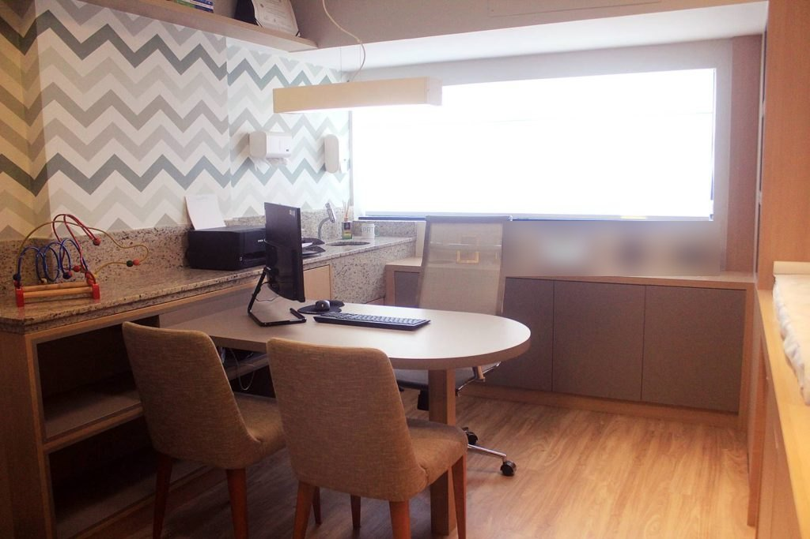
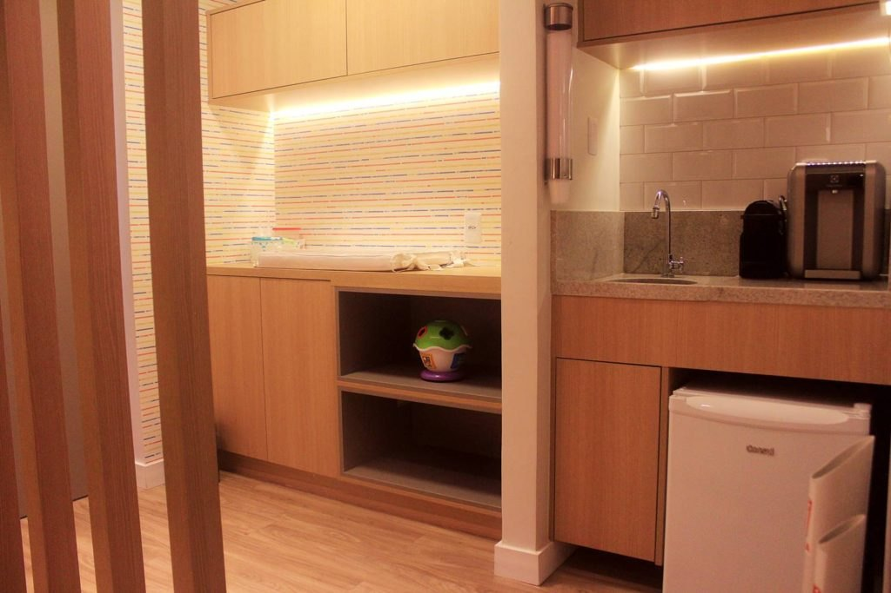

Dois pediatras para acompanhar cada fase do crescimento.
O consultório do Dr. Renan Nery e da Dra. Tainara Oliveira, que fizeram residência médica na mesma turma do Hospital das Clínicas da FMRP-USP. Puericultura, consulta pediátrica da gestante e gastroenterologia e hepatologia pediátrica, no Centro Médico Christian Barnard, em Salvador.
As marcas da formação e do trabalho dos dois, com as datas comprovadas em fontes públicas.
2012Os doisA mesma turma
Os dois começam a residência médica no Hospital das Clínicas da FMRP-USP, em Ribeirão Preto.
Fonte: CNES
2014Os doisResidência concluída
Fim da residência dos dois no HC-FMRP-USP (abril de 2012 a junho de 2014).
Fonte: CNES
2015Dr. RenanMedicina intensiva
O Dr. Renan passa a atuar em medicina intensiva, vínculo que mantém até hoje.
Fonte: CNES
2016Dra. TainaraTítulo em Pediatria
A Dra. Tainara recebe o título de especialista em Pediatria da Sociedade Brasileira de Pediatria.
Fonte: Doctoralia
2017Os doisSalvador
Abertura da empresa dos dois; a Dra. Tainara passa a atuar como pediatra no Hospital Universitário Prof. Edgard Santos (UFBA).
Fonte: Receita · CNES
2026Dra. TainaraCongresso da SBP
Dra. Tainara na comissão local do 20º Congresso Brasileiro de Gastroenterologia e Hepatologia Pediátricas, em Salvador.
Fonte: SBP
O consultório
Um lugar pensado para a espera também.
Sala de espera, cantinho de brinquedos, copa e a sala de consulta, na sala 307 do Centro Médico Christian Barnard.
Sala de esperaCantinho de brinquedos

Sala de consulta

Copa
Avaliações
O que as famílias contam.
5,0 com 85 avaliações no Google · trechos do Google e da Doctoralia, com nome abreviado
★★★★★Tenho segurança nas informações passadas, sempre dá explicação detalhada de tudo que será feito, fico à vontade para fazer qualquer tipo de pergunta★★★★★Dr. Renan tem uma abordagem didática e minuciosa que nos traz confiança★★★★★Super atencioso, cuidadoso e disponível… Clínica bem localizada, excelente estrutura e pontualidade.★★★★★Eu confio nele, pois sempre nos orientou muito bem e eu vejo que é um profissional que está sempre se atualizando.★★★★★O consultório é bem localizado e de fácil acesso, aconchegante, organizado e o local possui estacionamento com manobrista.★★★★★…extremamente competente, cuidadosa, segura, atualizada, mas acima de tudo HUMANA, sempre atenciosa e solicita com pais e pacientes.★★★★★Profissional de excelência. Cuida com muito carinho e profissionalismo.★★★★★Muito competente, informada e tem um jeito todo especial com as crianças.★★★★★Excelente estrutura e localização com profissionais de alta qualidade.★★★★★É um excelente profissional, atencioso, gentil e muito competente.★★★★★Que coração bom, que competência, que zelo!
192
Febre em bebê com menos de 3 meses, dificuldade para respirar, criança muito prostrada ou convulsão? Não espere a consulta: procure o pronto-socorro pediátrico mais próximo ou o SAMU (192). O consultório atende com hora marcada e não é serviço de urgência.